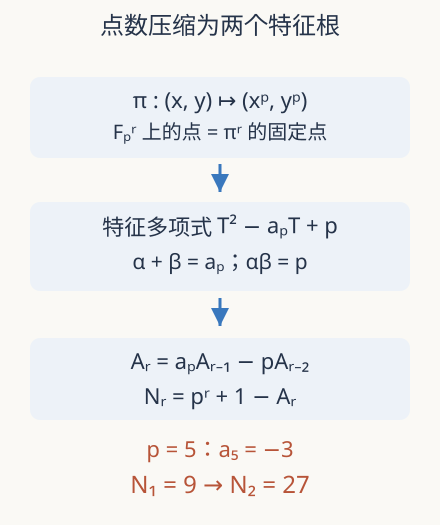

本页目录
数论桥梁 04 · Frobenius：把点数写成对称作用的迹
为什么在 \(\mathbb F_5\) 数一次点，就能预测同一曲线在 \(\mathbb F_{25}\) 的点数？先修前三讲，以及域与 Galois 理论。本讲从扩域计数走到表示的定义，最后分清算术与几何 Langlands 的接口。
1. 扩大域，不等于复制点表
\(\mathbb F_{p^r}\) 是有 \(p^r\) 个元素的域，包含 \(\mathbb F_p\)。同一方程允许更多坐标后，旧点仍在，也可能出现新点。它不是把原来的点任意配成 \(r\) 元组，因此新点数没有理由是旧点数的 \(r\) 次方。
特征 \(p\) 时，二项式中间系数都被 \(p\) 整除，所以 \((x+y)^p=x^p+y^p\)。映射 \(x\mapsto x^p\) 保持加法与乘法，在代数闭包上是自同构。对系数在 \(\mathbb F_p\) 的曲线，逐坐标取 \(p\) 次幂仍落在曲线上，得到 Frobenius 映射 \(\pi\)。一个点的坐标属于 \(\mathbb F_{p^r}\)，恰好等价于它被 \(\pi^r\) 固定。
扩域不会改变方程的系数，却会改变允许代入的坐标集合。因此每次记录点数时，都应同时标明曲线与底域。
这个观察把“找方程的解”变成“数某个对称作用的不动点”。直接数所有坐标依然昂贵；椭圆曲线的群结构提供了进一步压缩：研究它在扭点上的线性作用。

2. 两个特征根保留多少计数信息
选一个不同于 \(p\) 的素数 \(\ell\)。代数闭包上的 \(\ell^n\) 扭点构成两个循环方向，沿乘 \(\ell\) 的映射取逆极限，得到秩 2 的 \(\mathbb Z_\ell\) 模 \(T_\ell E\)。选择基后，Frobenius 在其上成为一个二乘二矩阵。
对光滑椭圆曲线，经典定理给出
这不是任意二乘二矩阵都拥有的形式；曲线几何保证迹是整数、行列式为 \(p\)，并且不依赖所选的辅助素数 \(\ell\)。设复特征根为 \(\alpha,\beta\)，则 \(\alpha+\beta=a_p\)、\(\alpha\beta=p\)，且 \(|\alpha|=|\beta|=\sqrt p\)。后者给出第一讲的 Hasse 界：\(|a_p|\le|\alpha|+|\beta|=2\sqrt p\)。
更强的计数定理是
本讲使用这条几何定理而不假装已经从有限表证明它。它可由 Frobenius 与度数理论建立，或放进更一般的上同调迹公式。下面的递推则完全是可手算的代数后果。
3. 不用求复根也能算扩域
定义 \(A_r=\alpha^r+\beta^r\)，则 \(A_0=2\)，\(A_1=a_p\)。每个根满足 \(z^2-a_pz+p=0\)，乘 \(z^{r-2}\) 后对两个根相加：
沿用 \(y^2=x^3+x+1\)，模 5 计数给 \(a_5=-3\)。所以 \(A_2=9-10=-1\)，\(A_3=(-3)(-1)-5(-3)=18\)。于是 \(N_1=9\)、\(N_2=25+1+1=27\)、\(N_3=125+1-18=108\)。特征根是 \((-3\pm i\sqrt{11})/2\)，模都为 \(\sqrt5\)，迹随次数振荡而点数保持整数。
也可独立检查第二项。取 \(\mathbb F_{25}=\mathbb F_5[u]/(u^2-2)\)，因为 2 在模 5 下非平方，每个元素唯一写成 \(a+bu\)。在这 25 个元素中先列平方频数，再对每个 \(x\) 数 \(x^3+x+1\) 的平方根，最后加 \(O\)，确实得到 27。这里的独立枚举没有调用迹递推，因此能发现递推符号、初值或模数的实现错误。
4. 从一个有限域走到有理数域上的表示
现在设 \(E\) 定义在 \(\mathbb Q\)。绝对 Galois 群 \(G_{\mathbb Q}=\operatorname{Gal}(\overline{\mathbb Q}/\mathbb Q)\) 作用在全部代数坐标上，并保持加法。它在 Tate 模上诱导连续表示
选基改变矩阵，却只作共轭，因此迹和行列式不变。在好约化素数 \(p\ne\ell\) 处，表示不分歧，选择按剩余域 \(x\mapsto x^p\) 作用的算术 Frobenius 约定，其特征多项式仍为 \(T^2-a_pT+p\)。若文献改用逆 Frobenius 或对偶上同调，必须同步调整公式，不能只凭名字拼接两种约定。
矩阵因此把不同素数的局部数据放进一个共同的全局对象。模性定理说，有理椭圆曲线对应适当层的权重 2 新形式，其好素数 Fourier 系数与这些迹相同。这比“几张点表恰好匹配”强得多；需要控制所有相关素数、局部条件和解析结构。
5. 边界与研究窗口
在坏约化处，光滑模型条件改变，不能强行使用同一个二次局部因子；在 \(p=\ell\) 处，上述不分歧描述也不直接适用。即使某两条曲线拥有相同迹，也不必在原坐标下同构：同源曲线可以共享相应的局部计数。迹压缩了重要信息，也确实丢掉了一些信息。
2019 年全实三次域的模性结果证明了指定域类中的一般结论；2026 年算术型双曲一致化研究则以明确的存在假设推出几何模性。两者体现的研究方法包括模曲线上的点、同源、Galois 表示与自动形式。本路线只是让这些问题可读，不把经典的有理数域结论误报成 2026 才发现。
这也不是几何 Langlands的证明。那里研究复曲线上的局部系统与层的范畴；这里研究数域 Galois 群与自动形式。二者共享表示与对称性的语言，但更换基底、对象和范畴需要新的先修，不能把一个对应的名字当成所有版本已解决。
把整串点数装进一个有理函数
另一种记录所有扩域计数的方式是形式幂级数 \(Z_E(t)=\exp(\sum_{r\ge1}N_rt^r/r)\)。这里先把 \(t\) 当形式变量，不急于讨论复解析收敛。代入已知点数公式，利用 \(-\log(1-z)=\sum_{r\ge1}z^r/r\)，得到
因此无限多次扩域计数被一个二次分子编码。这个推导清楚区分了两个层次：从几何得到点数公式是深的定理；在公式成立后重排形式级数是本讲可完成的代数。不能因为最后的有理函数很短，就以为其几何前提也很容易。
验收时可以反过来展开它的对数，检查第一项是否为 \(N_1\)、第二项是否为 \(N_2/2\)。若忘掉指数定义中的除以次数，会把计数与系数混淆。这一编码也说明辅助素数 ℓ 没有成为计数变量：扩域次数、所处素数和表示所用的 ℓ 各扮演不同角色，应始终保留名称。
6. 实验与迁移
先预测扩域点数是否为旧点数的平方，再改变素数与次数。后备参数：素数编号 0，\(p=5\)，\(r=2\)。
默认静态结果：\(N_1=9\)、\(a_5=-3\)、\(A_2=-1\)、\(N_2=27\)。图上归一化迹为 \(A_r/(2p^{r/2})\)，必须位于 \([-1,1]\)；这不表示点数本身被 1 限制。
题一。 若某好素数处 \(a_p=0\)，计算 \(N_2\)，并说明它位于扩域 Hasse 窗口的哪里。
独立作答后核对
\(A_2=-2p\)，所以 \(N_2=p^2+1+2p=(p+1)^2\)，达到 \(\mathbb F_{p^2}\) 窗口的上端。原域的零迹并不意味着所有扩域也零迹。
题二。 第一讲的二次扭曲把 \(a_p\) 改为 \(-a_p\)。扭曲后哪些扩域点数一定与原曲线相同？
独立作答后核对
两个根同时变为 \(-\alpha,-\beta\)，故 \(A_r\) 乘 \((-1)^r\)。偶数次数的点数相同；奇数次数的迹反号，点数围绕 \(p^r+1\) 对称。它们在二次扩域变得同构与此吻合。
速查与来源
| 层次 | 公式 | 条件 |
|---|---|---|
| Frobenius 多项式 | \(T^2-a_pT+p\) | 光滑曲线、约定一致 |
| 扩域递推 | \(A_0=2,A_1=a_p,A_r=a_pA_{r-1}-pA_{r-2}\) | \(N_r=p^r+1-A_r\) |
| Galois 表示 | \(G_{\mathbb Q}\to\mathrm{GL}_2(\mathbb Z_\ell)\) | 好素数 \(p\ne\ell\) 才用所述局部公式 |
实际访问 2026-09-08：Milne，2020 第二版；Sutherland，2023 第 6–8、23–25 讲；全实三次域模性，首稿 2019-01-11、期刊 2020；算术型双曲一致化，首稿 2026-07-04、修订 2026-08-27，预印本。